How to make an inflatable shape
1
Prepare design file in Illustrator. File should contains 2 shapes: for baking paper and for vinyl.
Do not forget to make space for place through which air is going to be blown inside a shape.
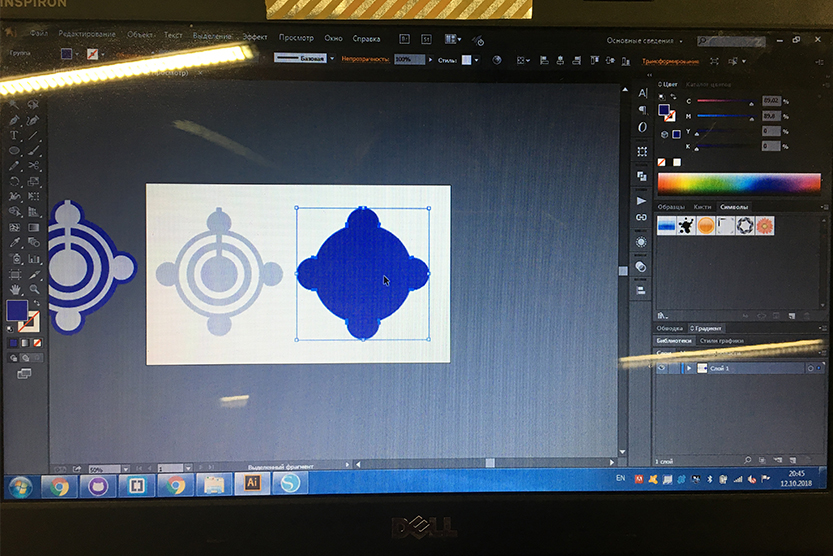
2
Export file in format .dxf
3
Download program Silhuette and open your file in it.
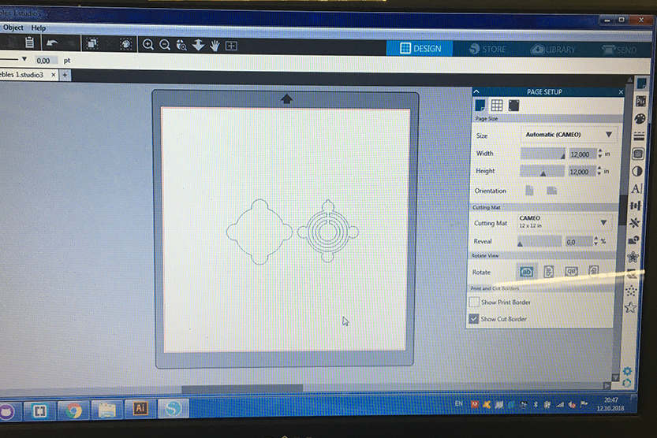
4
Go to Design/Page set up/ and change artboard to the size of printing machine (A4, portrait).
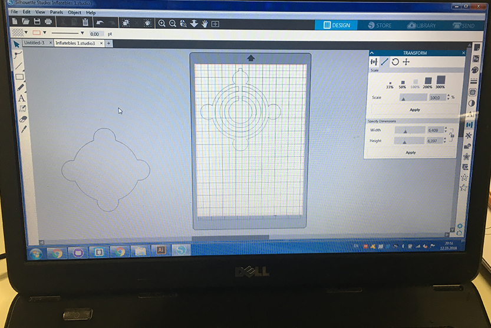
5
Put on the artboard shape for baking paper. Other shape move from the artboard, we will use it later.
6
Put baking paper to the special board for printing. It should stick very well to the surface of the board. Otherwise printer might damage the paper as you can see on the photo.
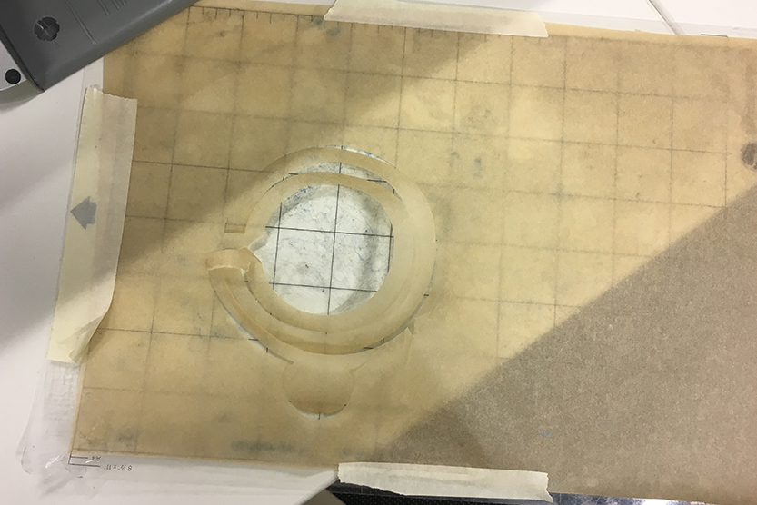
7
Insert the board with paper into the printer.
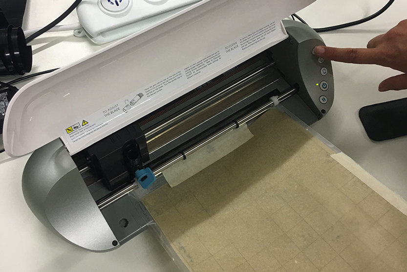
8
Go to /Send and adjust settings for printing. You have to change speed and force according to materil you are going to use. For thin materiarls speed and force should be lower than for thick. For backing paper use Speed - 2, Force - 10.
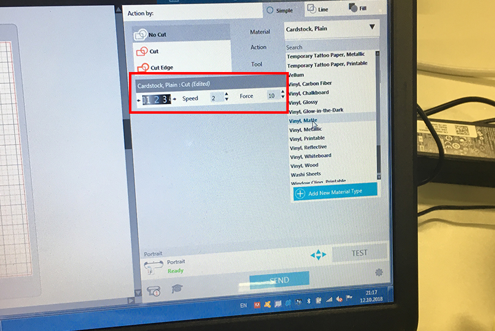
9
Now you have manually change speed on the printer cutting element. Speed should be the same as chosen in the program.
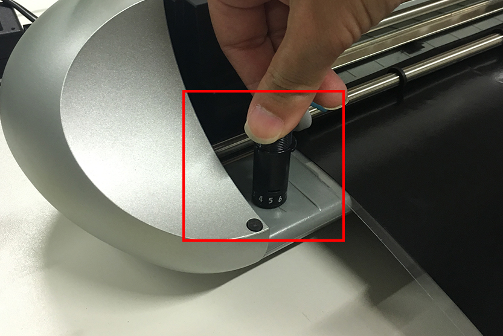
10
Make a test of printing. If it works well press Send
11
After printing shape on backing paper you have to print your second shape on vinyl. Then put on the printing board piece of vinyl. Important! Vinyl should be put with matte side on the top.
12
On the computer put to the artboard your secong shape for vinyl.
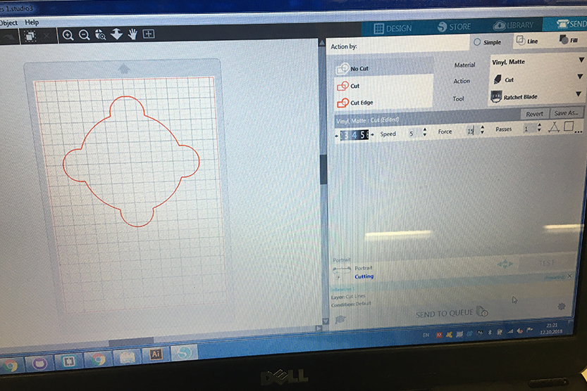
13
Go to Send and adjust settings. For Vinyl: Material - vinyl, matte. Speed - 4. Force - 15
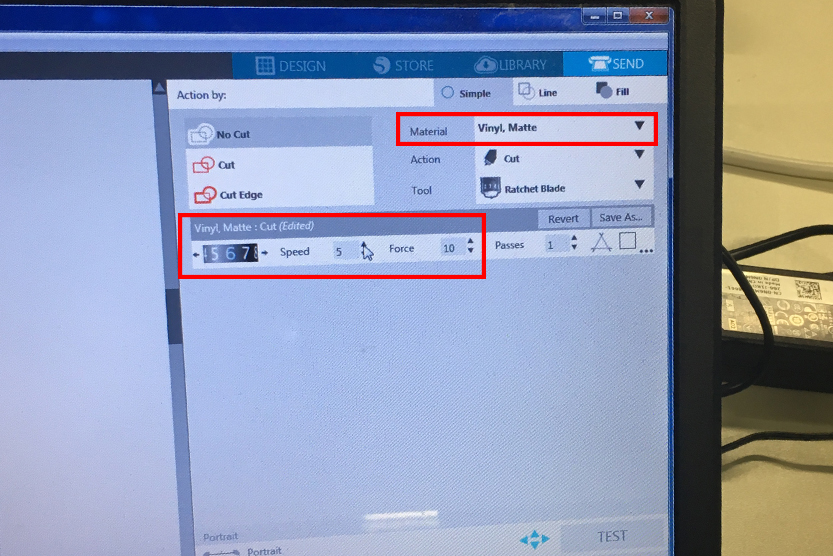
14
Make a test. If it works well press Send and print. Remember that you will need two similar vinyl pieces.
15
When vinyl pieces are cutted you have to separate it from the rest of material and from the foil.
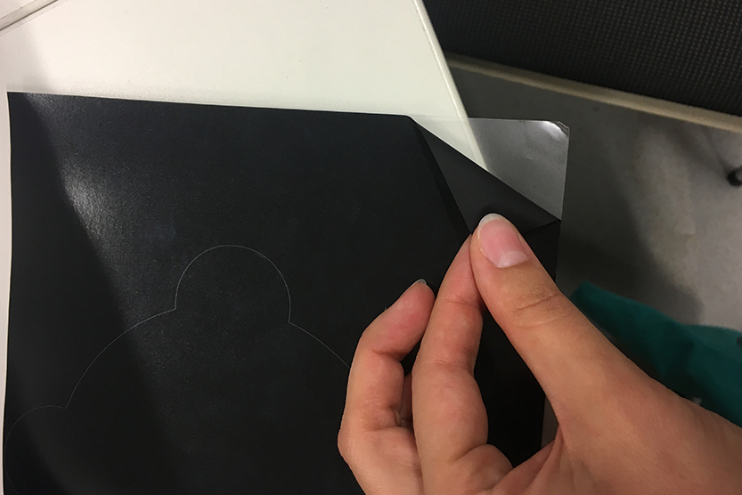
16
Now you have to combine all pieces together. Make a "sendwich": vinyl-baking paper-vilyl.
17
Next step is a Hot Press. Put your "sandwich" to the pressing machine. Important! You should put baking paper under and above your sandwich - otherwise mashine will melt vinyl.
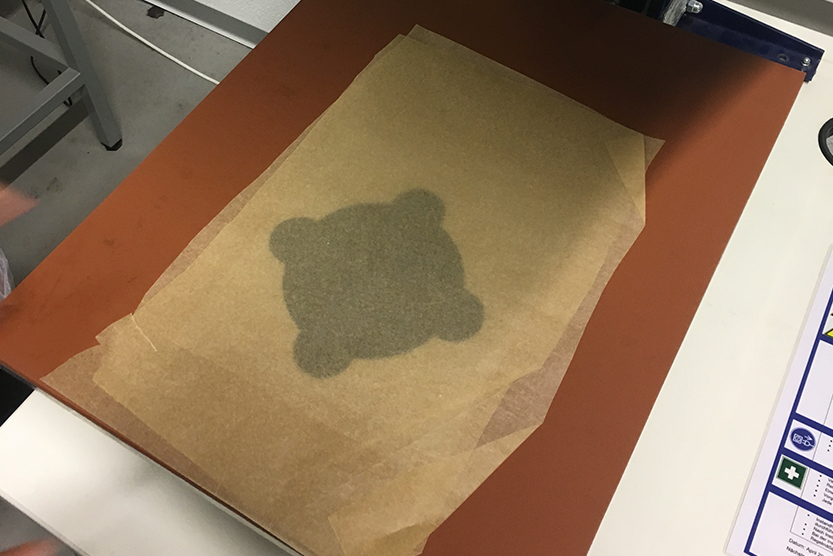
18
Hot press for 15 seconds. Take out, wait for a few seconds to cool it down and then separate your shape from the foil.
19
Put the tube in the whole for air.
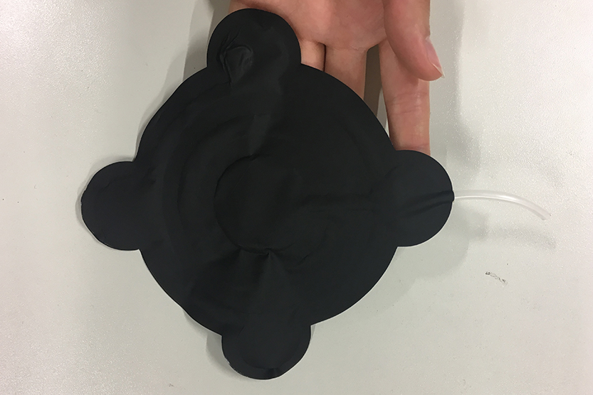
20
Congratulations - your inflatable shape is done! :)
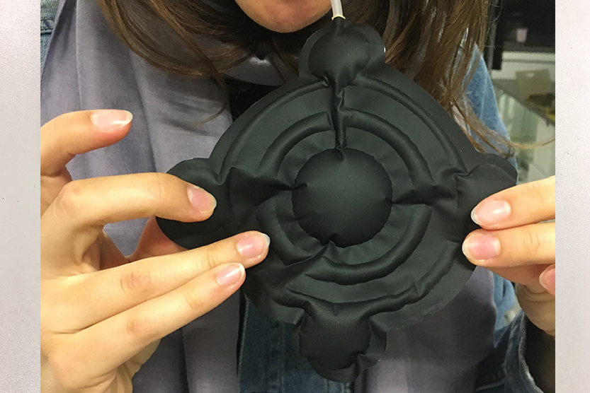